After creating a database,
- Next you define the kind of fields that define the information you wish to collect. For example a database of famous paintings may have a picture field called painting, for uploading an image file showing the painting, and two text fields called artist and title for the name of the artist and the painting. Alternatively, you can use a database preset.
- It is then optional to edit the database templates to alter the way in which the database displays entries.
A field is a named unit of information. Each entry in a database activity module can have multiple fields of multiple types e.g. a text field called ‘favourite color’ which allows you to type in your favourite shade, or a menu called ‘state’ that lets you choose one from a list of the 50 that make up the United States of America. By combining several fields with appropriate names and types you should be able to capture all the relevant information about the items in your database.
Note that if you later edit the fields in the databases you must use the Reset template button, or manually edit the template, to ensure the new fields are added to the display.
Field name and description
The name is what is shown when an entry is added. It must be unique and short. The description is for your benefit to help identify that field.
Field types
The following screenshots show “before” and “afters” of setting up fields. The selection in orange shows the field as it is displayed for the user when they add an entry.
Checkbox - This allows you to offer checkboxes for the user to select. Add the options one under the other. The word will appear next to a checkbox when the user clicks to add an entry. They can check more than one box.
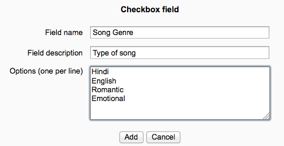
Date - This allows a user to enter a date by picking a day, month and year from a drop down list.
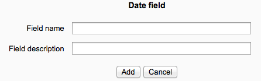
File - Users can upload a file from their computer. If it is an image file then the picture field may be a better choice.
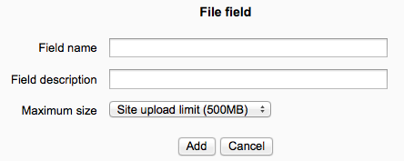
Latitude/longitude - Users can enter a geographic location using latitude and longitude. For example, Moodle HQ is at latitude -31.9545, longitude 115.877. When viewing the record, links are automatically generated linking to geographic data services such as Google Earth, OpenStreetMap, GeaBios,Mapstars and more.
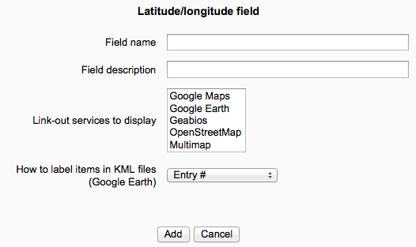
Menu - The text entered in the options area will be presented as a drop-down list for the user to choose from. Each line become a different option.
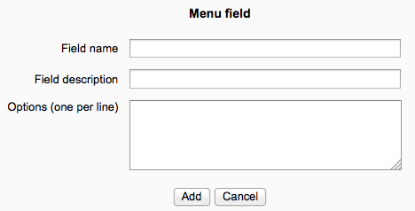
Menu (Multi-select) - The text entered in the options area will be presented as a list for the user to choose from and each line become a different option. By holding down control or shift as they click, users will be able to select multiple options. This is a fairly advanced computer skill so it may be wise to use multiple checkboxes instead.
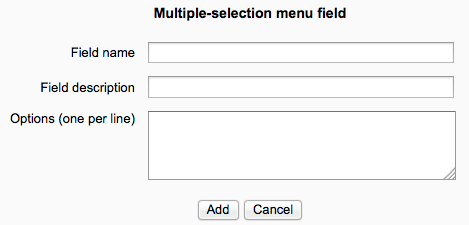
Number - This allows users to enter any number. For example: 42, -1000, 0, 0.123, 3.0e8
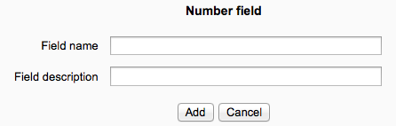
Picture - This allows a user to upload and display an image file. “Single view” is when the image is viewed on its own; “list view” is when it is viewed in with other images. Single view can be larger than list view.
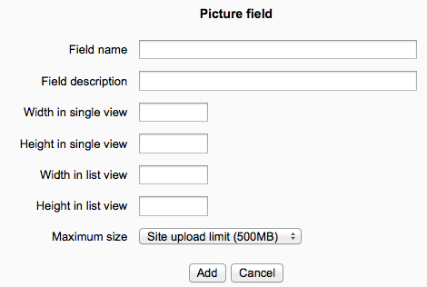
Radio buttons - The user gets radio buttons and can choose only one. They can only submit the entry when they have clicked on one button.
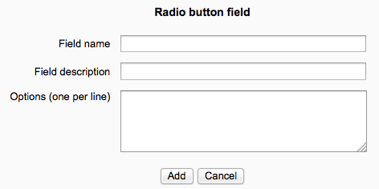
Text - Users can enter text up to 60 characters in length. For longer text, or for text that requires formatting such as headers and bullet points, you can use a text area field.
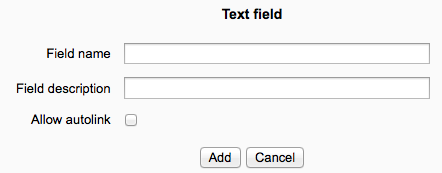
Text area - This allows users to enter a long piece of text using the text editor.
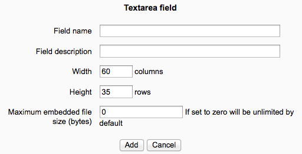
URL - The user can add a link to a website here. If you select autolink then the URL becomes clickable.. If you also enter a forced name for the link then that text will be used for the hyperlink.
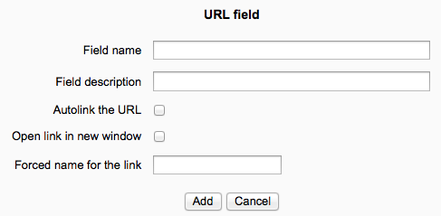
To avoid the necessity of always having to create a new database from scratch, the database activity module has a presets feature. An image gallery preset is currently included in the database module to help get you started. You can create your own presets as well and share them with others.
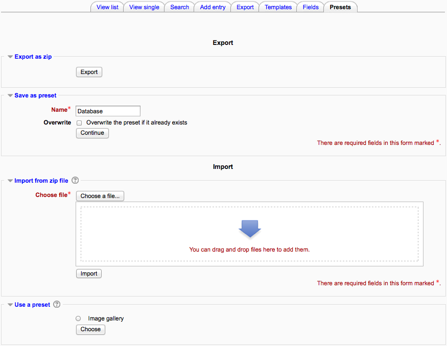To use a preset:
- On the database page, click the Presets tab.
- The usual way to import a preset is clicking the “Choose file” button and browsing to the ZIP file containing the preset (eg. “preset.zip”) stored on the server. If there does not yet exist a preset ZIP file on the server, upload it from your local machine. Choose the desired preset file by clicking on its action “Choose”. Finally, press the “Import” button.
- Alternatively, you can choose a previously loaded preset.
- After the import, you can start to add or import entries. All the hard work of setting up the fields and templates has been done for you. If you desire, you can still customize the fields and templates.
You will see a “Overwrite current settings” checkbox after the “Import” button has been pressed. If checked, the database activity overwrites some of its current general settings by those stored in the preset:
- the “Introduction” HTML text
- Required entries
- Entries required before viewing
- Maximum entries
- Comments
- Require approval?
- rssarticles
If you wish to share your database presets with others, you have two options:
- Export as a ZIP file, which can then be imported to another course or Moodle site.
- Save as a preset, which publishes the database for other teachers on your site to use. It will then appear in the preset list. (You can delete it from the list at any time.)
Note: Only the fields and templates of the database are copied when exporting or saving it as a preset, not the entries.